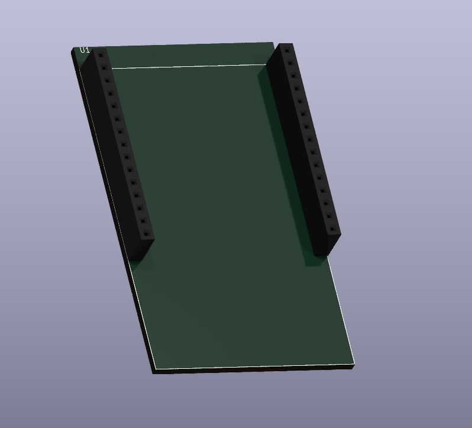

AMB82-MINI


MCU
Model: RTL8735B
32-bit Arm v8M, up to 500MHz
Memory
768KB ROM
512KB RAM
16MB Flash
Supports MCM embedded DDR2/DDR3L memory up to 128MB
Key Features
- Integrated 802.11 a/b/g/n Wi-Fi, 2.4GHz/5GHz
- Bluetooth Low Energy (BLE) 5.1
- Integrated Intelligent Engine @ 0.4 TOPS
- USB Host/Device
- SD Host
- ISP
- Audio Codec
- H.264/H.265
- Secure Boot
- Crypto Engine
Other Features
- 2 SPI interfaces
- 1 I2C interface
- 8 PWM interfaces
- 3 UART interfaces
- 3 ADC interfaces
- 2 GDMA interfaces
- Max 23 GPIO
Created by Oliver0804